Metric för macOS
En verktygslåda i eget fönster för tempo och frekvens till macOS, med inbyggd metronom. Den ställer in delaytider utifrån ett tempo, räknar ut FM-kvoter och sidband, synkar en LFO till takten och transponerar ett sampel, i ett fönster som går att ändra storlek på och som du kan ha öppet bredvid din DAW. Siri, Genvägar och en widget i Notiscenter stöds.
- Metronom med tapptempo och visuell taktindikator
- BPM → ms / Hz-omvandlare (raka, punkterade och triolvärden)
- Tabell över ton ↔ frekvens (108 toner, A4 = 440 Hz)
- Transponering och hastighet, FM-kalkylator, LFO-frekvens, 32 övertoner
- Tapptempo i menyraden, delaytider i ms eller Hz, plus metronom och toner
- Siri, Genvägar och en BPM-widget i Notiscenter
Skärmbilder
Ljusa och mörka skärmbilder som följer webbplatsens tema.

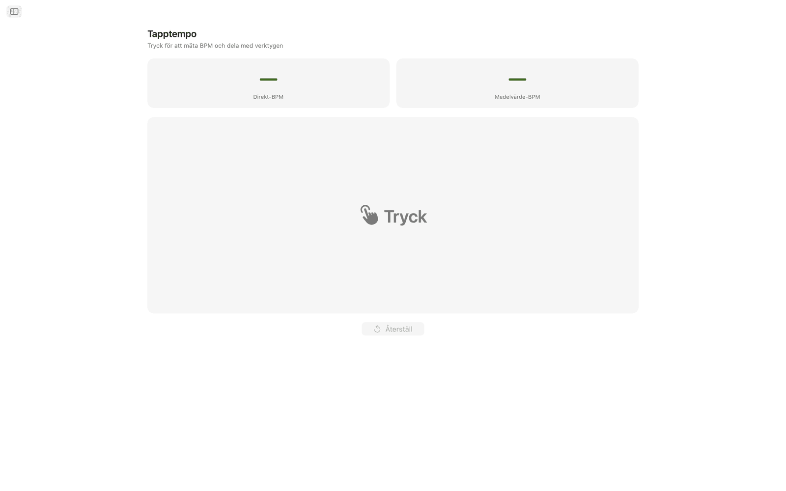
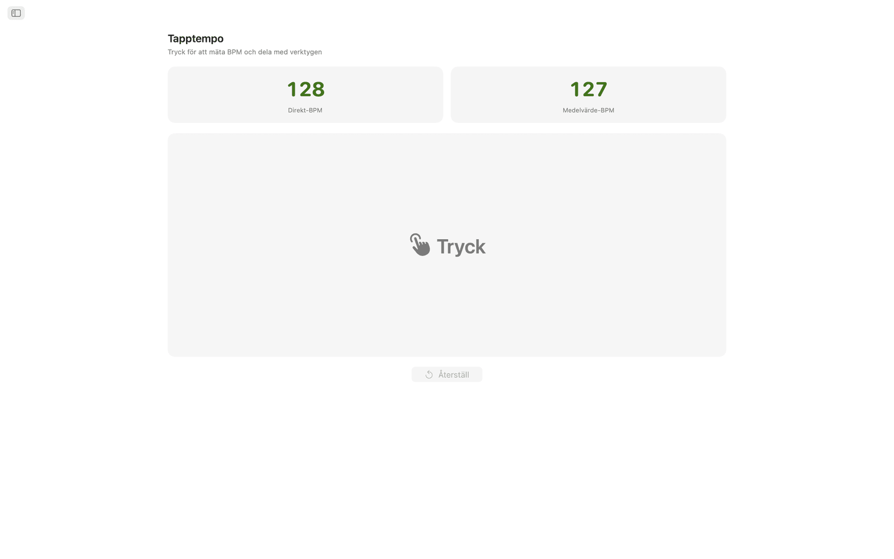
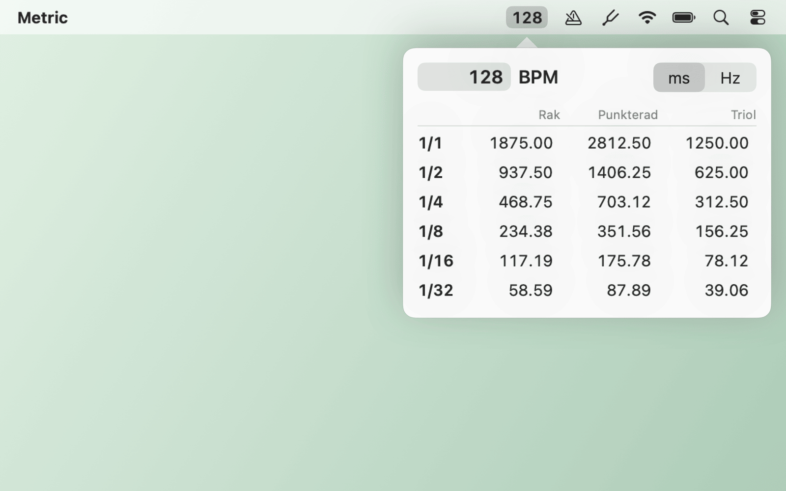
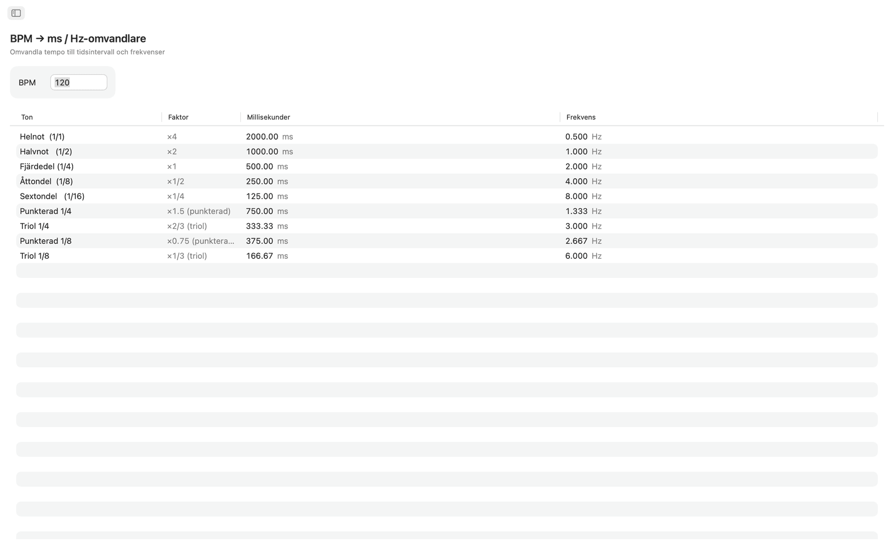
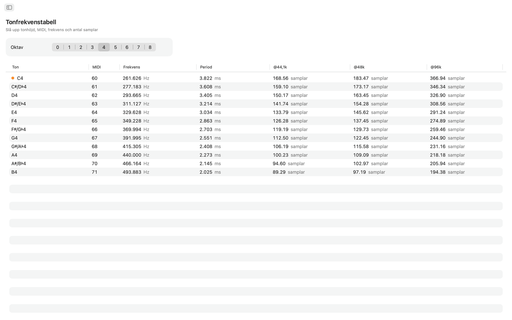
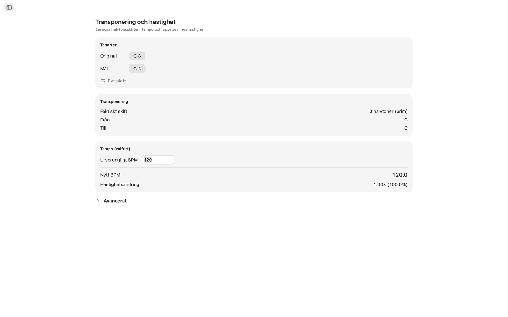
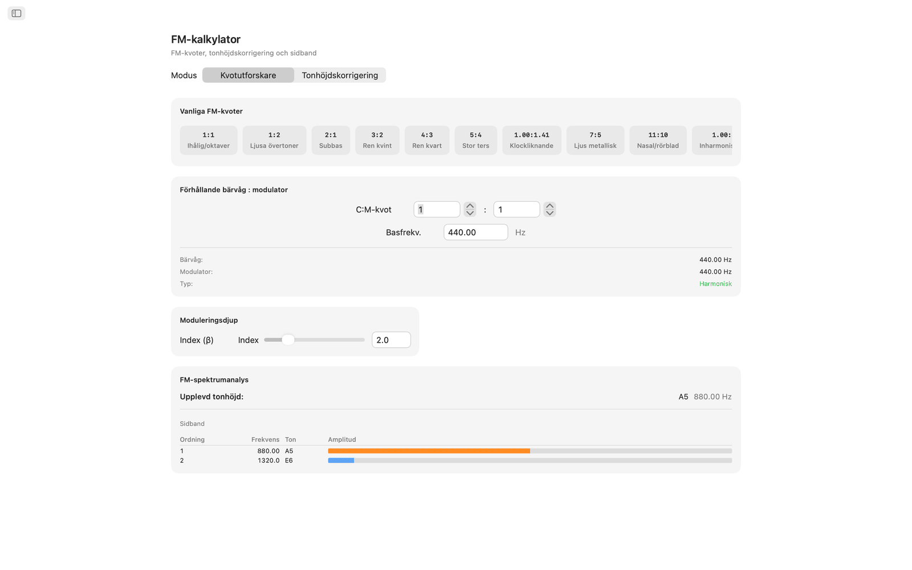
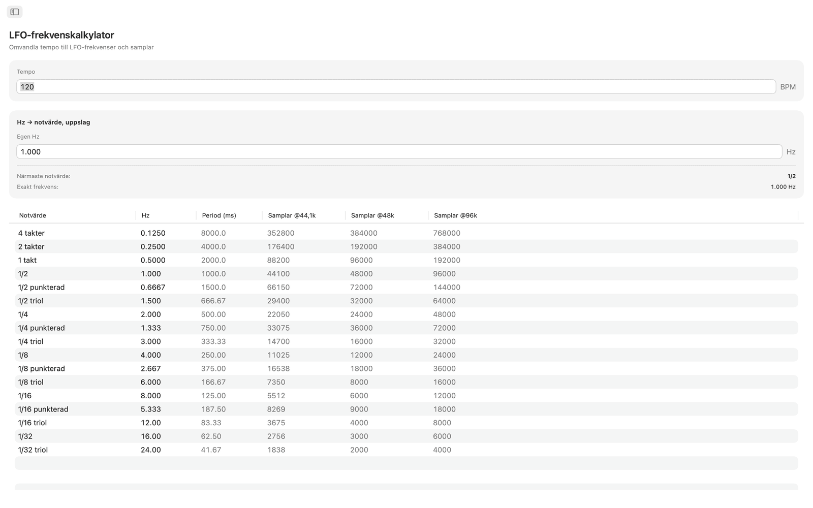
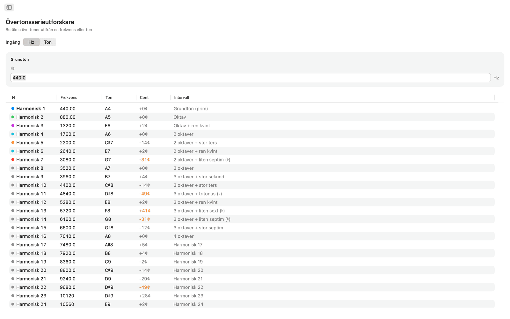

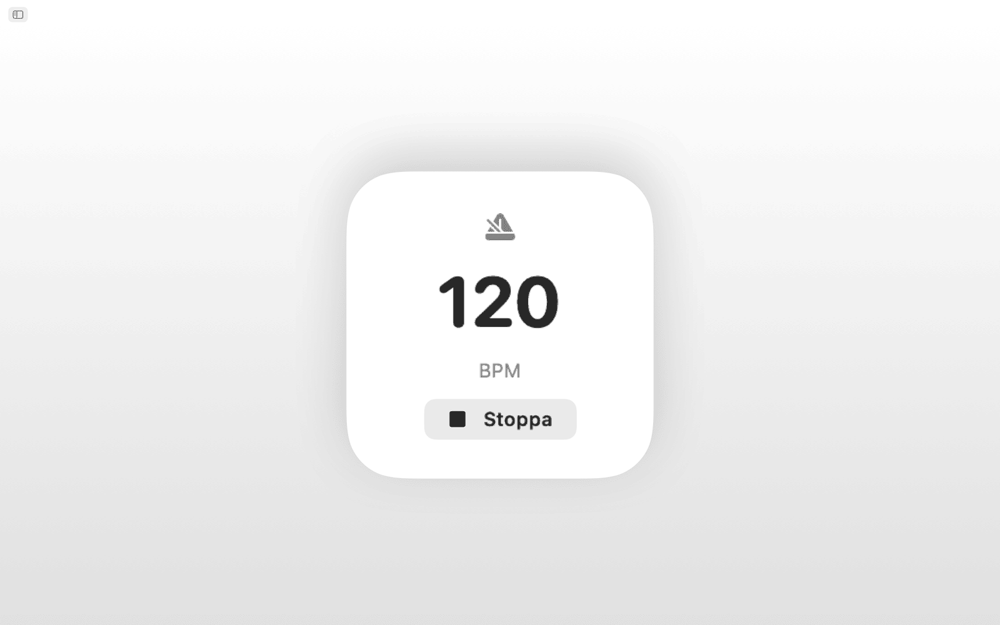
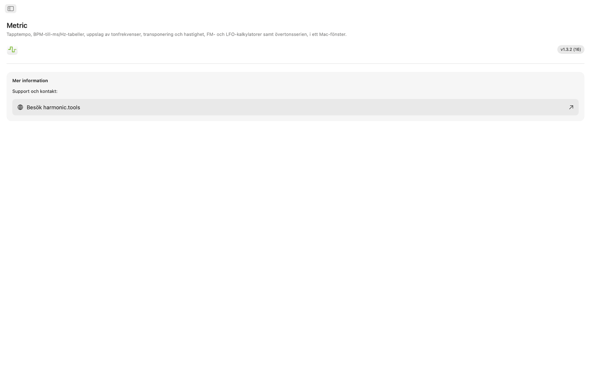
Funktioner
- Metronomen har en temporatt, tapptempo, taktarter, underdelningar och en visuell taktindikator.
- Klicka på den stora tryckytan för att mäta tempo. Metric visar BPM från ditt senaste tryck och ett löpande medelvärde över upp till åtta tryck, och något av värdena kan skickas direkt till BPM-omvandlaren, Transponera eller LFO-frekvens med ett klick.
- BPM → ms / Hz-omvandlaren tar ett tempo och ger raka, punkterade och triolvärden för hel-, halv-, fjärdedels-, åttondels- och sextondelsnoter. Varje rad visar millisekunder och frekvens i Hz, så att du kan ställa in delay, pre-delay för reverb eller sidechain-timing utan miniräknare.
- Tonfrekvenstabellen listar alla 108 kromatiska toner från C0 till B8. Varje ton visar sitt MIDI-nummer, sin frekvens i Hz, sin period i millisekunder och antal samplar vid 44,1, 48 och 96 kHz. Mellersta C är markerat. Utgår från A4 = 440 Hz.
- För transponering väljer du en ursprungstonart och en måltonart och ser halvtonsskiftet, intervallnamnet och det exakta transponeringsvärdet för din DAW. Lägg till ett ursprungligt BPM så räknar Metric ut det nya tempot och hastighetskvoten för uppspelningen. Ett centreglage (±100) och ett hastighetsreglage som spänner över två oktaver (±24 halvtoner) ger finjustering.
- FM-kalkylatorn har två lägen. Kvotutforskare ställer in bärvågs- och modulatorkvoter utifrån en basfrekvens och erbjuder tio FM-förinställningar, från ihåliga oktaver (1:1) till inharmoniska klockljud (1:π). Tonhöjdskorrigering fungerar åt andra hållet: välj en målton och få exakta bärvågs- och modulatorfrekvenser. Båda lägena visar en sidbandstabell med upp till tio deltoner, deras frekvenser, närmaste toner och färgkodade amplituder som styrs av ett reglage för modulationsindex.
- LFO-frekvenskalkylatorn omvandlar valfritt BPM till LFO-frekvenser över 17 musikaliska notvärden, från fyra takter ned till 1/32-triol. Varje rad visar Hz, period i millisekunder och samplar per cykel vid 44,1, 48 och 96 kHz. Med omvänd sökning anger du valfritt Hz-värde och hittar närmaste musikaliska notvärde, med avvikelsen angiven.
- Övertonsserien utgår från en frekvens eller valfri ton och listar de första 32 övertonerna med frekvens, närmaste tonnamn, avvikelse i cent och intervallbeteckning. Övertoner av låg ordning är färgkodade, och avvikelser på mer än 30 cent markeras, så att inharmoniskt innehåll är lätt att upptäcka.
Delat tempo och delad stämning
Tryck in ett tempo en gång så använder BPM-omvandlaren, Transponera och LFO-frekvens alla samma aktuella BPM. Tonfrekvens, FM-kalkylatorn och Övertoner utgår alla från A4 = 440 Hz.
Siri, Genvägar och widget
Be Siri starta eller stoppa metronomen, ställa in ett BPM, tappa ett tempo, omvandla BPM till ms, hitta en tonfrekvens eller transponera ett tempo. Varje verktyg är också en åtgärd i Genvägar, och BPM-widgeten visar ditt tempo i Notiscenter.
Verktyg i menyraden
Tappa ett tempo från menyraden utan att öppna appen. Högerklicka för delaytider i ms eller Hz och skriv in valfritt tempo. Objekten för metronom och tonhöjder är valfria, och det finns inställningar för enbart menyrad och start vid inloggning.
På skrivbordet
- Fungerar helt offline. Inget konto, inga annonser, ingen spårning
- Äkta macOS-app med navigering i sidofältet
- Gränssnitt som anpassas till mörkt läge och följer systemets utseende
- Antal samplar vid 44,1, 48 och 96 kHz
- Fönster som går att ändra storlek. Ha det öppet bredvid din DAW
Tillgänglighet
Fungerar med VoiceOver och Röststyrning och kan användas från tangentbordet, med piltangenter och mellanslag.
Metric är gratis att prova i 7 dagar. Efter provperioden köper du full åtkomst en gång, utan prenumeration.